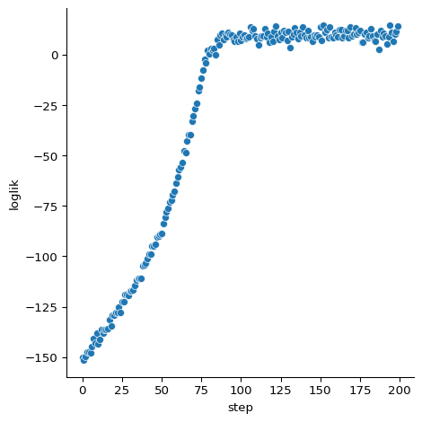

Simulated Maximum Likelihood with PFJAX
Pranav Subramani, Mohan Wu, Martin Lysy 2022-09-13
Summary
In the Introduction to PFJAX, we saw how to set up a model class for a state-space model and how to use a particle filter to estimate its marginal loglikelihood \(\ell(\tth) = \log p(\yy_{0:T} \mid \tth)\). In this tutorial, we’ll use PFJAX to approximate the maximum likelihood estimator \(\hat \tth = \argmax_{\tth} \ell(\tth)\) and its variance \(\var(\hat \tth)\).
Benchmark Model
We’ll be using a Bootstrap filter for the Brownian motion with drift model defined in the Introduction:
where the model parameters are \(\tth = (\mu, \sigma, \tau)\). The details
of setting up the appropriate model class are provided in the
Introduction. Here we’ll use the version of this model
provided with PFJAX: pfjax.models.BMModel.
# jax
import jax
import jax.numpy as jnp
import jax.scipy as jsp
import jax.random
from functools import partial
# plotting
import numpy as np
import pandas as pd
import seaborn as sns
import matplotlib.pyplot as plt
import projplot as pjp
# pfjax
import pfjax as pf
from pfjax.models import BMModel
# stochastic optimization
import optax
Simulate Data
# parameter values
mu = 0.
sigma = .2
tau = .1
theta_true = jnp.array([mu, sigma, tau])
# data specification
dt = .5
n_obs = 100
x_init = jnp.array(0.)
# initial key for random numbers
key = jax.random.PRNGKey(0)
# simulate data
bm_model = BMModel(dt=dt)
key, subkey = jax.random.split(key)
y_meas, x_state = pf.simulate(
model=bm_model,
key=subkey,
n_obs=n_obs,
x_init=x_init,
theta=theta_true
)
# plot data
plot_df = (pd.DataFrame({"time": jnp.arange(n_obs) * dt,
"x_state": jnp.squeeze(x_state),
"y_meas": jnp.squeeze(y_meas)})
.melt(id_vars="time", var_name="type"))
sns.relplot(
data=plot_df, kind="line",
x="time", y="value", hue="type"
)

Stochastic Optimization
The first step to performing simulated maximum likelihood estimation with PFJAX is to estimate the MLE \(\hat \tth = \argmax_{\tth} \ell(\tth)\). To do this, we perform stochastic optimization of the particle filter objective function \(\hat{\ell}(\tth)\), for which we’ll need to approximate the score function \(\nabla \ell(\tth) = \frac{\partial}{\partial \tth} \ell(\tth)\).
A straightforward approximation would be to use JAX to directly
differentiate the particle filter approximation \(\hat{\ell}(\tth)\).
However, this turns out to be biased (Corenflos et al.
2021), in that in general
\(E[\frac{\partial}{\partial \tth} \hat{\ell}(\tth)] \neq \frac{\partial}{\partial \tth} \ell(\tth)\).
The Gradient Comparisons notebook compares
the speed and accuracy of several stochastic approximations to the score
function. The recommended algorithm (Poyiadjis, Doucet, and Singh
2011) is implemented in
pfjax.particle_filter_rb(). Note that this algorithm scales
quadratically in the number of particles, whereas scaling is only linear
with the basic particle filter pfjax.particle_filter(). However, the
quadratic algorithm requires far fewer particles for comparable (but
superior) accuracy and speed.
We’ll use the Optax package for gradient-based stochastic optimization in the code below. First we write a simple wrapper function to stochastically maximize PFJAX state-space models.
def pf_stochopt(model, key, theta, y_meas, n_particles,
learning_rate, n_steps):
"""
Stochastic optimization using Adam.
Args:
model: A particle filter model object.
key: PRNG key.
theta: Initial parameter value.
y_meas: JAX array with leading dimension `n_obs` containing the measurement variables
`y_meas = (y_0, ..., y_T)`, where `T = n_obs-1`.
n_particles: The number of particles to use in the particle filter.
learning_rate: Optimizer learning rate.
n_steps: Number of optimizer steps.
Returns:
theta: Parameter value at last step.
loglik: JAX array of length `n_steps` containing a stochastic estimate of the loglikelihood at each step.
"""
# set up and initialize the optimizer
optimizer = optax.adam(learning_rate=learning_rate)
opt_state = optimizer.init(params=theta)
# optimizer step function
@jax.jit
def step(theta, key, opt_state):
pf_out = pf.particle_filter_rb(
model=model,
key=key,
y_meas=y_meas,
n_particles=n_particles,
theta=theta,
history=False,
score=True,
fisher=False
)
opt_updates, opt_state = optimizer.update(
updates=-1.0 * pf_out["score"], # optax assumes a minimization problem
state=opt_state,
params=theta
)
theta = optax.apply_updates(params=theta, updates=opt_updates)
return theta, opt_state, pf_out["loglik"]
# optimizer loop
subkeys = jax.random.split(key, n_steps)
loglik_out = jnp.zeros((n_steps,))
for i in jnp.arange(n_steps):
theta, opt_state, loglik = step(theta=theta, key=subkeys[i], opt_state=opt_state)
loglik_out = loglik_out.at[i].set(loglik)
return theta, loglik_out
Next, we perform stochastic optimization for the Brownian motion model and the simulated data.
# optimization setup
theta_init = jnp.array([1., 1., 1.])
n_particles = 50
learning_rate = 0.01
n_steps = 200
theta_opt, loglik = pf_stochopt(
model=bm_model,
key=key,
theta=theta_init,
y_meas=y_meas,
n_particles=n_particles,
learning_rate=learning_rate,
n_steps=n_steps
)
# plot loglikelihood as a function of step count
sns.relplot(
data = {"step": jnp.arange(n_steps), "loglik": loglik},
x = "step",
y = "loglik"
)
# estimated and true parameter values
{"theta_opt": jnp.round(theta_opt, decimals=2), "theta_true": theta_true}
{'theta_opt': Array([0.01, 0.19, 0.13], dtype=float32),
'theta_true': Array([0. , 0.2, 0.1], dtype=float32)}

We see that the stochastic optimization converged after about 100 steps and that the estimate \(\hat \tth\) is very close to the true parameter value.
Variance Estimation
Suppose we had the MLE of the exact marginal likelihood, \(\tilde{\tth} = \argmax_{\tth} \ell(\tth)\). Then the standard method of estimating its variance \(\var(\tilde{\tth})\) is by taking the inverse of the observed Fisher information,
Therefore, a natural choice of variance estimator for the stochastic maximum likelihood estimate \(\hat{\tth}\) calculated above is the inverse of the expected value of the observed Fisher information taken over the particles,
Once again, we use the algorithm of Poyiadjis, Doucet, and Singh (2011) to obtain a consistent estimate of the expectation above, and calculate the variance estimator in the code below.
@partial(jax.jit, static_argnums=(0, 4))
def pf_varest(model, key, theta, y_meas, n_particles):
"""
Variance estimation for stochastic optimization.
Args:
model: A particle filter model object.
key: PRNG key.
theta: Initial parameter value.
y_meas: JAX array with leading dimension `n_obs` containing the measurement variables
`y_meas = (y_0, ..., y_T)`, where `T = n_obs-1`.
n_particles: The number of particles to use in the particle filter.
Returns:
varest: Variance estimate.
"""
pf_out = pf.particle_filter_rb(
model=model,
key=key,
y_meas=y_meas,
n_particles=n_particles,
theta=theta,
history=False,
score=True,
fisher=True
)
return jnp.linalg.inv(pf_out["fisher"])
# calculate the variance estimate
n_particles = 100 # increase this a bit since the calculation only needs to be done once
theta_ve = pf_varest(
model=bm_model,
key=key,
theta=theta_opt,
y_meas=y_meas,
n_particles=n_particles
)
theta_ve
Array([[ 7.3080487e-04, 1.1083301e-06, 3.2907774e-06],
[ 1.1083516e-06, 8.4179023e-04, -2.6923112e-04],
[ 3.2907708e-06, -2.6923110e-04, 3.5276197e-04]], dtype=float32)
Finally, we should check that the variance estimator is positive definite.
array([0.00023356, 0.00073083, 0.00096097], dtype=float32)
References
Corenflos, Adrien, James Thornton, George Deligiannidis, and Arnaud Doucet. 2021. “Differentiable Particle Filtering via Entropy-Regularized Optimal Transport.” In Proceedings of the 38th International Conference on Machine Learning, edited by Marina Meila and Tong Zhang, 139:2100–2111. Proceedings of Machine Learning Research. PMLR. https://proceedings.mlr.press/v139/corenflos21a.html.
Poyiadjis, G., A. Doucet, and S. S. Singh. 2011. “Particle Approximations of the Score and Observed Information Matrix in State Space Models with Application to Parameter Estimation.” Biometrika 98 (1): 65–80. https://doi.org/10.1093/biomet/asq062.